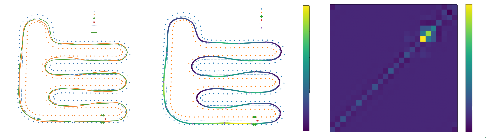

Autonomous Systems · Motion Planning
GA-Based Global Path Planning
Global path planning and minimum-lap-time trajectory optimization using genetic algorithms for autonomous racing vehicles. The approach was validated in simulation and on a real-world autonomous racing platform, demonstrating the ability to generate feasible and optimized trajectories in complex track environments. The results showed that the GA-Based planner allowed for improved lap times and smoother trajectories comapred to the existing methods.
Technical Approach
The project was designed to be a algorithmic improvement on the existing optimal race line generation methods. It is designed to be used simultaniously with SLAM. The approach uses non-uniform B-spline (NURBS) controlled by
a set of control nodes to generate candidate trajectories. The control nodes are then optimized using a genetic algorithm to minimize the lap time while satisfying vehicle dynamics
and track constraints.
The racing line is defined as,
\[ \mathbf{p}(s) = \mathbf{p}_c(s) + e(s)\mathbf{n}(s) \]
where \( \mathbf{p}_c(s) \) is the centerline of the track, \( e(s) \) is the lateral offset from the centerline, and \( \mathbf{n}(s) \) is the unit normal vector to the centerline at arc length \( s \).
This is parameterized using a NURBS curve defined by a set of control points \( \mathbf{P}_i \) and corresponding weights \( w_i \). Next, candidate trajectories are generated and evaluated
through,
\[ J = T_{lap} + w_kJ_{\Delta k} + w_{\alpha} J_C\]
where \( T_{lap} \) is the lap time, \( J_{\Delta k} \) is the curvature change cost, and \( J_C \) is the curvature smoothness cost. The weights \( w_k \) and \( w_{\alpha} \) are used to balance the trade-off between
lap time and trajectory smoothness. Aditionally, a curvature cobtraint was designed using the known vejicle dynamics and tire models.
Results
The GA planner was benchmarked against a beam-search baseline on a multi-hairpin cone track. The genetic algorithm produced a trajectory with a lap time of 27.609 s, outperforming the beam-search result of 27.923 s — a reduction of over 0.3 s per lap. The velocity heat map confirms that the optimiser correctly identifies late-apex racing lines through tight corners and carries higher minimum speeds through the sweeping sections.
The node-interaction matrix reveals that adjacent control nodes exhibit the strongest coupling, while distant nodes are largely independent — validating the local nature of the lateral-offset parameterisation and supporting efficient crossover and mutation operators in the GA.

GA based global path planning was successfully implemented and validated on a real-world autonomous racing platform. The results demonstrated that the GA-Based path planner was faster computationally than the current beam-search method. with a total computation time of 2s compared to 3s for the beam-search method.
Aditonally, GA-based path planning was more robust to track changes and was able to generate feasible paths in complex track environments where the beam-search method failed. Lastly, the GA-based path planner allowed for better scalability as it was able to have adaptive nodal density in long straight sections of the track while having higher nodal density in complex sections of the track.